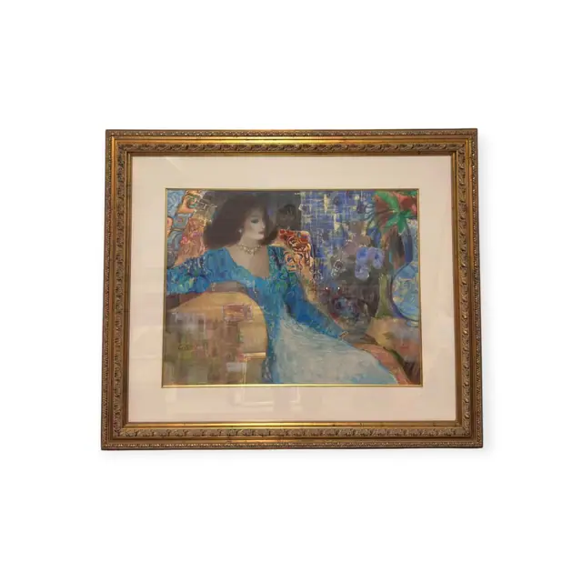
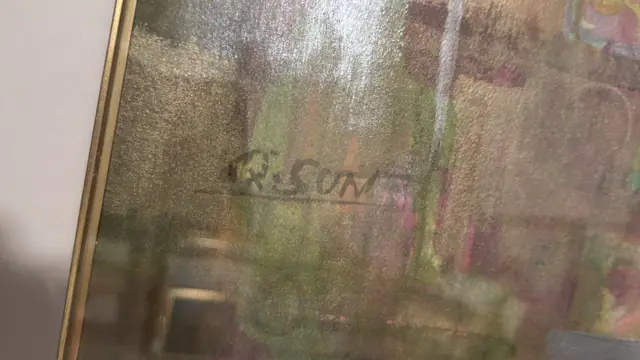
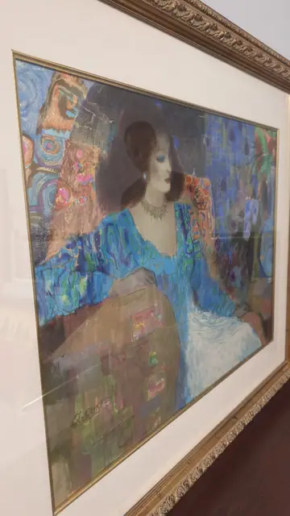

Paintings & Prints
Woman in Blue Gown Klimt-Style Portrait, Q.SUN, Signed, Framed
Q.SUN · late 20th century
Price Upon Request



About the Item
Q.SUN. A three-quarter portrait of a woman with heavy chestnut hair, downcast blue-shadowed lids and a jewelled choker, wearing an off-shoulder gown patterned in peacock blue, turquoise and violet swirls. The background dissolves into a mosaic of small rectangles and totemic ornament in copper, magenta, cobalt and jade, and the lower third becomes a grid of soft olive, pink and gold squares like a tiled table. The medium is chalky and matt with the paper tooth showing through, and the drawing is built up in layered strokes rather than flat washes. Medium: pastel and mixed media on paper. Signed lower left of the sheet, in dark paint, reading "Q.SUN". Inscribed on the reverse or mount: Q.SUN. Condition: Sheet appears clean and evenly toned; strong glass glare across the upper half in every frame. Frame ornament shows light rubbing.
Details
- Creator:
- Q.SUN
- Creation Year:
- late 20th century
- Dimensions:
- Height: 37.75 in (95.89 cm)
Width: 45.25 in (114.94 cm)
outside of frame - Medium:
- pastel and mixed media on paper
- Period:
- 20Th
- Condition:
- Offered in the condition shown in the photographs.
- Reference Number:
- VO-93
- Documentation:
- no certificate photographed
- Gallery Location:
- Q.SUN